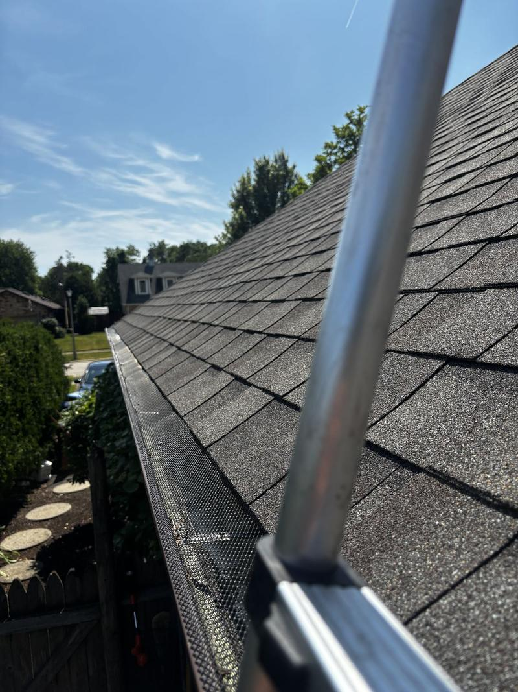
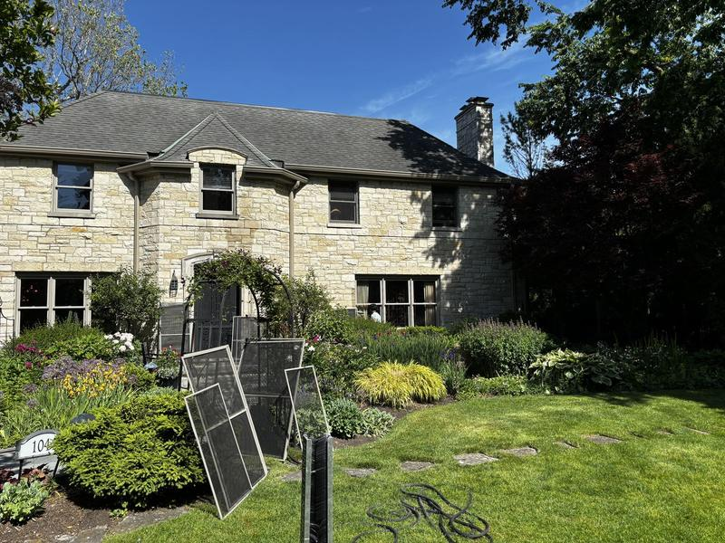

Debris removed by hand, gutters flushed and downspouts checked. Licensed, insured and streak-free guaranteed.
Clogged gutters overflow, and that water ends up in your foundation, fascia and landscaping. We remove all debris by hand, flush the gutters with water, and make sure every downspout is flowing. We can also scrub the outside face of the gutters to remove the black streaks.
Every home is different, so we always give you an exact, free quote before any work starts. New customers get 10% off their first cleaning.
Get My Exact Price

At least once a year, and twice if you have trees near the house. Late fall, after the leaves come down, is the most important visit.
It cleans the outside face of the gutter, where the black "tiger stripe" streaks form. It starts at $100 and pairs well with window cleaning.
More answers on our FAQ page.
Pick your town to see how we serve it.